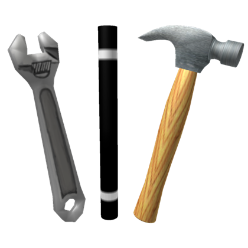

PortableBridge
PortableInfobox to InfoboxNeue converter

Portable infobox
Paste <infobox> markup
InfoboxNeue
Copy generated output
Based on PortableInfobox tags and parameters from Fandom wikis and MediaWiki's PortableInfobox extension.
InfoboxNeue uses
Module:InfoboxNeue
and
Template:InfoboxNeue
from the Star Citizen Wiki. © CC-BY-SA 4.0.